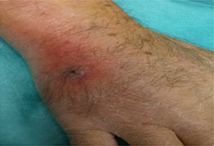

ICO 24h
MÓDULO 2 : Hospital de Día Oncológico
2.5 Problemas médicos directamente relacionados con el tratamiento en hospital de día
2.5.1 Reacciones infusionales
Prácticamente todos los medicamentos usados en oncología tienen el potencial de generar reacciones adversas durante la infusión o en manera diferida en domicilio. En casos puntuales se pueden producir cuadros de anafilaxia severa (taxanos, rituximab…) que siempre ocurren durante la estancia del paciente en el hospital de Día. Los pacientes que reciben docetaxel (cáncer de pulmón, cáncer de mama) se les indican una pauta preventiva antialérgica que deberán de tomar la noche antes y la mañana y noche del día de infusión del tratamiento. En alguno de los casos en que se ha producido una reacción infusional grave, se valora continuar administrando el mismo fármaco, siguiendo una pauta especial de desensibilización. Estos tratamientos sólo se administran en centros que dispongan de unidades especiales de desensibilización farmacológica, con un médico especialista en alergología. La desensibilización consiste en la administración controlada, hiperfraccionada y premedicada del fármaco. Estos pacientes, a veces tienen la indicación de recibir premedicación a domicilio con Montelucast® 10 mg/dia y Adiro® 300 mg/dia 48 horas, 24 horas y el mismo día del tratamiento en Hospital de Día.
2.5.2 Extravasación de fármacos
Es la salida no intencionada del fármaco durante la administración endovenosa hacia los espacios perivascular y subcutáneo. Dependiendo de la sustancia extravasada el grado de daño puede ir desde el dolor a la necrosis cutánea. Cuando se produce una extravasación, el equipo de enfermería de hospital de día aplica un protocolo específico en función del fármaco implicado, incluso en algunos casos se administra un antídoto. Siempre se deberá de hacer un seguimiento en la consulta de enfermería y en caso de evolución tórpida se deberá de consultar al cirujano plástico. Si un paciente ambulatorio portador de quimioterapia en infusión contínua alerta de una posible extravasación deberemos de considerarlo como una urgencia médica e indicarle que se presente con la mayor brevedad posible en el hospital de día de oncología o el control de enfermería de la planta de hospitalización de oncología si es fuera del horario habitual.
Caso clínico extravasación
Hombre, 40 años. Neo pulmón. Tto Vinorelbina (administrado ayer). Refiere dolor en zona de inserción de la vía tipo quemazón. Zona enrojecida. Lesión abierta de piel.
Actuación :
Claral tópico c/8h
Analgesia s/p previa toma temperatura
Seguimiento en consulta de enfermería HOD